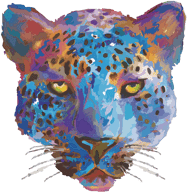

Fundación Biósfera de Álica, A.C.
Capital natural que hay que proteger

Fundación Biósfera de Álica, A.C.
Edición digital 2026 · Fundación Biósfera de Álica, A.C.
Fundación Biósfera de Álica, A.C.
El territorio
La Sierra de Álica es una región de gran biodiversidad, y lugar étnico sagrado, con inigualables recursos naturales, impactantes paisajes, ríos y bosques. Con un gran número de especies endémicas y/o en peligro de extinción, esta sierra constituye un hábitat de incomparable riqueza biótica y abiótica, que la posiciona como uno de los principales tesoros naturales de México.
El Área Natural Protegida CADNR 043, Estado de Nayarit, es el nombre oficial que ya tiene este polígono. Es un reservorio clave de biodiversidad que proporciona servicios ambientales vitales: regulación hídrica, fertilidad de suelos, captura de carbono y producción de oxígeno.
Fuente: INEGI, 2015. Marco Geoestadístico Municipal; CONANP, 2016. Estudio Previo Justificativo, Sierra de Álica, Nayarit.
Sierra de Álica
Hidrología
La Sierra de Álica alberga la segunda cuenca más importante de México, con un volumen anual de extracción de 28,614,034 hm³ y una disponibilidad de aguas subterráneas de 33,885,660 hm³ al año.
Fuente: CONANP, 2016. Estudio Previo Justificativo para el establecimiento del área natural protegida, Sierra de Álica, Nayarit.
Sierra de Álica
Microclimas y suelos
Microclimas que prevalecen en el polígono: cálido subhúmedo y semicálido subhúmedo, cada uno en sus variantes de menor, media y mayor humedad en verano.
Los suelos van del Leptosol, somero y pedregoso, al Phaeozem, rico en humus, pasando por Cambisol, Regosol y Luvisol, cada uno con su propia capacidad de retener agua y sostener vida.
Fuentes: INEGI 2010 y 2007. SEMARNAT, CONABIO y Fundación Biósfera de Álica, A.C.
Sierra de Álica
Biodiversidad
La Sierra de Álica alberga una extraordinaria diversidad biológica. Esta riqueza abarca tres reinos fundamentales de la vida: Plantae, Animalia y Fungi, cada uno desempeñando un papel crucial en el equilibrio del ecosistema.
Sierra de Álica
Reino Plantae
Bryophyta, Coniferophyta, Magnoliophyta y Pteridophyta, agrupados por clase.
| Phylum | Clase | Cantidad |
|---|---|---|
| Bryophyta | Anthocerotopsida | 4 |
| Bryophyta | Bryopsida | n/d |
| Bryophyta | Hepaticopsida | n/d |
| Coniferophyta | Pinopsida | 12 |
| Magnoliophyta | Liliopsida | n/d |
| Magnoliophyta | Magnoliopsida | n/d |
| Pteridophyta | Equisetopsida | 1 |
| Pteridophyta | Lycopodiopsida | 15 |
| Pteridophyta | Polypodiopsida | 129 |
| Pteridophyta | Psilotopsida | 7 |
| Total | 2,932 |
Cuatro celdas están cubiertas por el brillo del flash en el documento original y se marcan como n/d; el total, 2,932, sí es legible con claridad.
Sierra de Álica
Reino Animalia
Chordata y Arthropoda, agrupados por clase.
| Phylum | Clase | Cantidad |
|---|---|---|
| Chordata | Amphibia | 28 |
| Chordata | Aves | 477 |
| Chordata | Mammalia | 113 |
| Chordata | Reptilia | 64 |
| Arthropoda | Insecta | 763 |
| Arthropoda | Arachnida | 108 |
| Total | 1,553 |
Los seis valores de esta tabla son legibles con claridad en el documento original y suman exactamente el total reportado.
Sierra de Álica
Reino Fungi
Ascomycota, Basidiomycota y Chytridiomycota, agrupados por clase.
| Phylum | Clase | Cantidad |
|---|---|---|
| Ascomycota | Dothideomycetes | n/d |
| Ascomycota | Eurotiomycetes | 1 |
| Ascomycota | Lecanoromycetes | n/d |
| Ascomycota | Leotiomycetes | 2 |
| Ascomycota | Pezizomycetes | n/d |
| Ascomycota | Saccharomycetes | 48 |
| Basidiomycota | Agaricomycetes | n/d |
| Basidiomycota | Dacrymycetes | 3 |
| Basidiomycota | Exobasidiomycetes | 1 |
| Basidiomycota | Microbotryomycetes | 1 |
| Basidiomycota | Pucciniomycetes | 83 |
| Basidiomycota | Tremellomycetes | 2 |
| Basidiomycota | Ustilaginomycetes | 3 |
| Chytridiomycota | Blastocladiomycetes | 1 |
| Total | 479 |
Cuatro celdas están cubiertas por el brillo del flash en el documento original y se marcan como n/d; el total, 479, sí es legible con claridad.
Sierra de Álica
La organización
El proyecto Fundación Biósfera de Álica nace del sentimiento y la convicción de que no hay esfuerzo, por mínimo que sea, que carezca de valor para revertir el sentido de la pérdida de biodiversidad de la Sierra de Álica.
El origen y la pasión nayarita por la naturaleza, del Dr. Antonio Muñoz Santiago, viene desde sus abuelos maternos. Desde 2004 buscó el apoyo de la Presidencia de la República y de instancias gubernamentales, como SEMARNAT, para proteger este ecosistema. El 20 de mayo de 2015, quedó constituida la Fundación Biósfera de Álica, A.C., que tiene como principal objetivo buscar la declaratoria de la Sierra de Álica como Reserva de la Biósfera.
Promovemos iniciativas que fortalecen la biodiversidad y la conectividad biológica, y consolidamos un modelo de gestión que garantice la armonía entre naturaleza, cultura y desarrollo humano.
La fundación
Quiénes somos
Somos un grupo multidisciplinario de profesionistas, amigos y familia, con un sueño común: conservar, proteger y aprovechar, sustentable y culturalmente, la Sierra de Álica, como un capital natural para la presente y las futuras generaciones.
Nuestra labor se sustenta en la ciencia, la innovación y la participación comunitaria, generando proyectos que fortalecen la biodiversidad y promueven un modelo de desarrollo sostenible y equitativo.
La fundación
Visión
La fundación
Misión
La fundación
Valores
A los ecosistemas, a la biodiversidad, a las etnias huichol y cora, a las comunidades circunvecinas.
Agentes de cambio que generan conciencia ambiental para el progreso y desarrollo sustentable.
Somos parte de ellas: la riqueza ancestral de nuestras etnias y su legado cosmogónico.
Por el cuidado y protección de la naturaleza de nuestro hábitat.
Congruencia en nuestras operaciones con todos los grupos de interés.
La fundación
01 · El trabajo
Nuestra primera tarea es lograr la Declaratoria de la Sierra de Álica como Reserva de la Biósfera.
Nuestras causas
02 · El trabajo
Apoyamos una mejor calidad de vida de las comunidades indígenas de la región, con proyectos de desarrollo sustentable inclusivo.
Nuestras causas
03 · El trabajo
Fomentamos la conservación a través de proyectos de investigación científica, desarrollo tecnológico y educación ambiental.
Nuestras causas
En marcha
Espacio protegido destinado a la conservación y manejo de la biodiversidad de la Sierra de Álica: fauna, flora, micobiota y microbiota. Este polígono asegura la protección de los ecosistemas de la sierra y contribuye a la sostenibilidad ambiental de la región.
Lograr que el gobierno de México reconozca a la Sierra de Álica como Reserva de la Biósfera. La primera tarea de la fundación, y sigue abierta.
Proyectos en marcha
En marcha
Prevención, detección y control de incendios forestales, tala inmoderada y caza furtiva, mediante vigilancia permanente y respuesta inmediata. Recorridos en selva baja caducifolia, selva media perennifolia y bosques mixtos de pino-encino, que fortalecen la seguridad ambiental de la Sierra de Álica.
Proyectos en marcha
En marcha
Protección y fomento de abejas, abejorros, avispas, colibríes, escarabajos, hormigas, mariposas, murciélagos y polillas: agentes clave para la reproducción de plantas y la seguridad alimentaria. Impulsa educación ambiental y participación comunitaria, y promueve la diversidad genética de especies nativas.
Proyectos en marcha
En marcha
Propagación masiva de plantas melíferas y forestales, apoyo a la investigación y restauración de ecosistemas degradados. Fortalece corredores biológicos y contribuye a la mitigación del cambio climático mediante la captura de carbono.
Protege plántulas forestales y melíferas contra radiación solar excesiva y lluvias intensas, optimizando su supervivencia en etapas tempranas e incrementando la capacidad de restauración ecológica en programas comunitarios.
Proyectos en marcha
En marcha
Estancias de investigadores en biotecnología agrícola, forestal, micología, bacteriología y entomología. Impulsa la investigación aplicada y la innovación sustentable, fortaleciendo la vinculación entre la ciencia, las comunidades locales y la conservación.
Los primeros catálogos y censos biológicos como banco de datos natural.
Compensación monetaria por el uso racional de los bosques, para fomentar su cuidado.
Hospedaje, centro educativo, centro cultural y laboratorios.
Protección y recuperación del patrimonio cultural huichol: arte, lenguas, usos y costumbres.
Proyectos en marcha
El proyecto más grande
La Fundación Biósfera de Álica y Dimitra Technology unen fuerzas para desarrollar proyectos de conservación y bienestar comunitario en la Sierra de Álica. Dimitra es una empresa global de Agtech que provee tecnología y capacitación a pequeños agricultores.
El proyecto busca reducir y capturar gases de efecto invernadero mediante conservación y manejo sustentable. Cada bono representa la mitigación de una tonelada de CO₂.
Reducción de gases de efecto invernadero. Conservación de bosques, suelos y cuerpos de agua.
Empleo local en conservación y reforestación. Educación ambiental para la comunidad.
Recursos de la venta de bonos, reinvertidos en proyectos ambientales y comunitarios.
Capacitación a ejidatarios para medir altura, DAP y supervivencia de los árboles.
Brigadas comunitarias y cortafuegos.
Plantación de especies nativas y cobertura vegetal en áreas degradadas.
Especies melíferas y forestales, hábitats funcionales para la fauna nativa.
Talleres de sostenibilidad, gestión forestal y créditos de carbono.
Bonos de carbono
En contexto
Distribución de recursos y actividades de conservación en seis proyectos de carbono.
| Proyecto | Ubicación | Prop. | Desarr. | Actividades principales |
|---|---|---|---|---|
| Bonos de Carbono FBA y Dimitra | Nayarit | 50% | 50% | Monitoreo comunitario (DAP, altura). Prevención de incendios con brigadas y cortafuegos. Plantación de especies melíferas y forestales. |
| Scolel Té | Chiapas | 60–70% | 30–40% | Reforestación con Pinus y Quercus. Manejo forestal certificado FSC. Restauración de suelos con composta. |
| San Juan Lachao | Oaxaca | 50–60% | 40–50% | Reforestación nativa. Monitoreo por teledetección (Sentinel-2). Viveros comunitarios. |
| Captura de Carbono Com. Indígenas | Oaxaca | 55–65% | 35–45% | Enriquecimiento de bosques y cafetales. Monitoreo de stocks de carbono. Educación ambiental. |
| Pueblo Nuevo (Xico2e) | Durango | 70% (+5%) | 30% (+5%) | Manejo forestal en 49,932 ha. Monitoreo con drones. Cortafuegos y vigilancia comunitaria. |
| México2: El Ocote | Chiapas | 50–60% | 40–50% | Reforestación de selva degradada. Mediciones de biomasa y teledetección. |
El proyecto de la Sierra de Álica es, junto con Scolel Té, el que reparte una mayor proporción de utilidades a los propietarios de tierras entre los seis comparados aquí.
Conclusiones
La alianza entre la Fundación Biósfera de Álica y Dimitra Technology protege la Sierra de Álica, impulsa la conservación forestal y genera beneficios directos para las comunidades que habitan la región. Este proyecto fortalece el vínculo entre tecnología, sostenibilidad y desarrollo comunitario, y permite la creación de un modelo innovador que combina la captura de carbono, la preservación de ecosistemas y la generación de ingresos sostenibles.
Con la implementación de los bonos de carbono, se establece una vía clara para combatir el cambio climático y garantizar que las utilidades se reinviertan en conservación y bienestar social. De esta forma, la Fundación Biósfera de Álica y Dimitra Technology consolidan un compromiso compartido con el medio ambiente y las comunidades locales, asegurando un impacto positivo que trasciende generaciones.
Bonos de carbono
Vida silvestre
El Reino Animalia de la Sierra de Álica suma 1,553 registros: 477 especies de aves, 113 de mamíferos, 64 de reptiles y 28 de anfibios, además de 763 de insectos y 108 de arácnidos.
No es posible retratar cada una de esas especies, pero sí presentar algunas de las más representativas de este territorio: las mismas que la propia Fundación eligió, desde su primer libro, como símbolo de la fauna que protege.
Fuente: CONANP, 2016. Estudio Previo Justificativo, Sierra de Álica, Nayarit. Fundación Biósfera de Álica, A.C.
Fauna de la Sierra
Especies representativas
Un mamífero, un ave rapaz y el jaguar: el mismo animal que la Fundación eligió como su propio emblema.
Panthera onca
Felino más grande de América; especie sombrilla de la Sierra de Álica y emblema de la Fundación.
Odocoileus virginianus
El mamífero más representativo de los bosques de pino-encino de la sierra.
Buteo sp.
Una de las 477 especies de aves registradas en el polígono de la reserva.
Fotografía propia de esta edición, ambientada en el bosque de niebla de la Sierra de Álica.
Fauna de la Sierra
Participar
Hay diversas maneras de apoyarnos en la labor que realizamos. Lo importante es la voluntad y el compartir esta causa común de protección y conservación de la Sierra de Álica y de sus comunidades.
Cómo puedes ayudarnos
Escríbenos
Correo
info@biosferadealica.org
Antonio Muñoz
Tel: (81) 1988 6447
antoniomm1@icloud.com
Fernanda Méndez
Tel: (33) 1068 0463
evafernandamendezobregon@gmail.com
Dirección
Puerto Marqués No. 911, Col. Narvarte
Monterrey, N.L., CP 64830
El territorio
Sierra de Álica, Nayarit
El Nayar, La Yesca, Santa María del Oro, Tepic y Jala
Contacto
y cultivar el origen de la vida